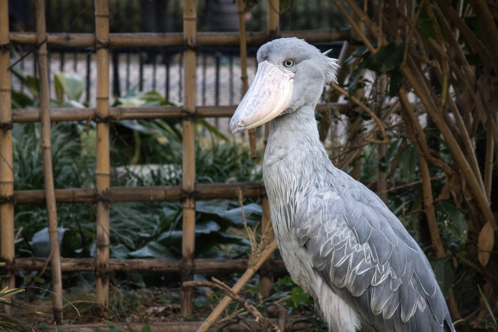

DESIGN, WITH A QUIET FOCUS.
Scroll
Service
できること
コーディング
CODING
HTML・CSSでデザインを丁寧に再現。画面の大きさを問わず、読みやすく使いやすいサイトを制作します。
制作実績を見るWebデザイン
WEB DESIGN
目的と想いを整理し、伝わる構成と迷わず使える導線を考えます。見た目と使いやすさを大切にしています。
制作実績を見るビジュアル制作
VISUAL DESIGN
Illustrator・Photoshopで、バナーやPOP、アイコンを制作。伝えたい印象を文字と配色でかたちにします。
制作実績を見るフロントエンド
FRONTEND
JavaScript・Reactを使い、動きのあるUIを実装。日々の操作が心地よくなる体験を目指します。
制作実績を見る- HTML
- CSS
- JavaScript
- React
- Photoshop
- Illustrator
Works
これまでの制作実績
ABOUT
じっくり見つめて、
ひとつずつ、丁寧に。
静かに佇む姿も、大きく羽ばたく姿も。
ハシビロコウの佇まいに惹かれています。
ものづくりでも、大切にしたいのは
目の前のことに、じっくり向き合うこと。
伝えたい想いをくみ取り、
デザインとコードでかたちにします。
Ryo Yokoyama
フリーランス Web制作者
